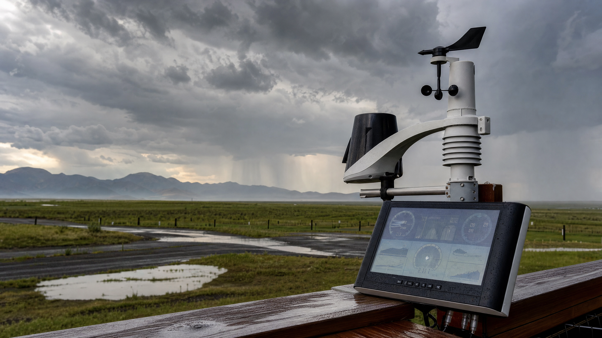
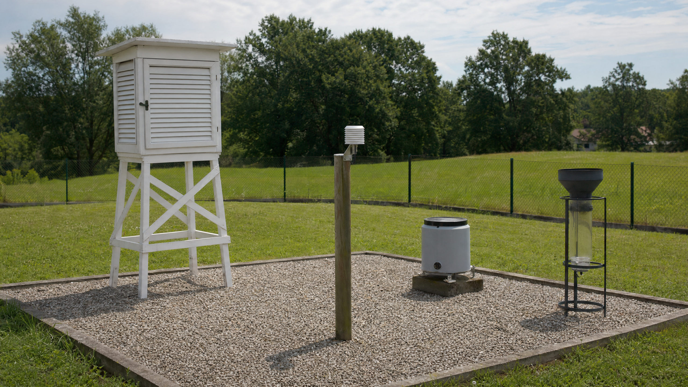
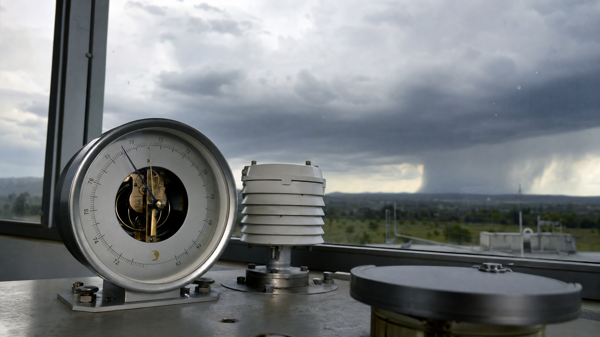
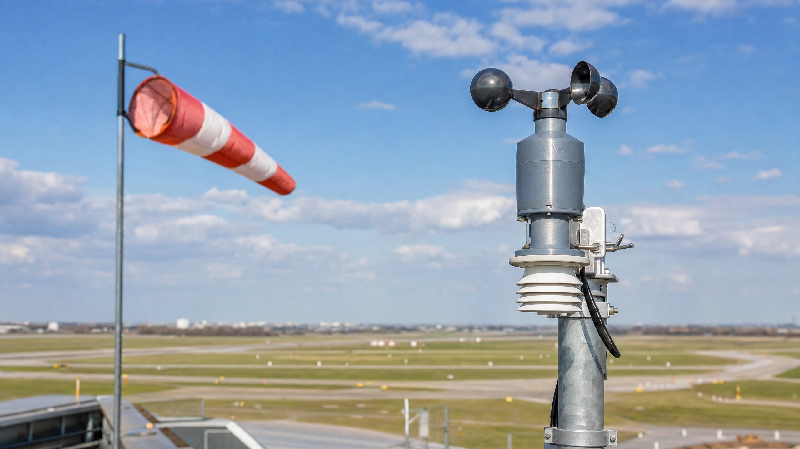
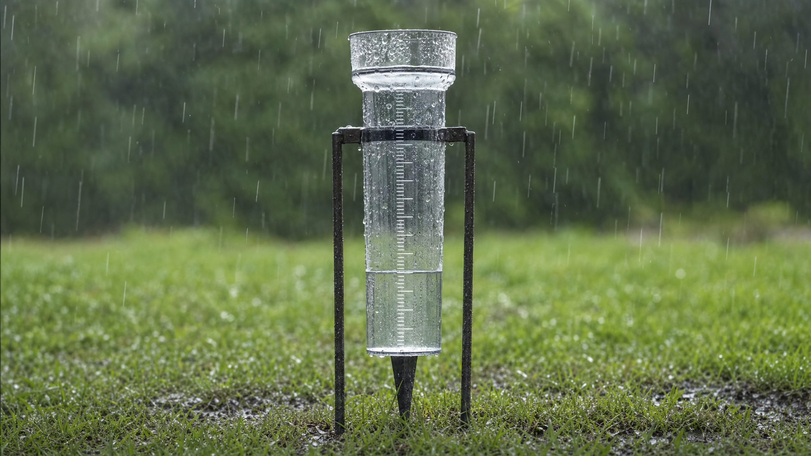

Parte 1 — Questões de múltipla escolha
1 A escola de Ana pretende realizar uma caminhada ao ar livre. Na manhã do evento, a previsão indica possibilidade de chuva, aumento da umidade do ar e ventos fortes. Para tomar uma decisão segura, os responsáveis devem considerar principalmente:
a) Apenas a temperatura máxima do dia.b) A precipitação, a umidade e a velocidade dos ventos.c) Somente a direção do vento.d) Apenas a quantidade de nuvens observada no céu.
2 Durante uma aula prática, os estudantes observaram um termômetro, um higrômetro, um barômetro e um pluviômetro. Um estudante afirmou que o pluviômetro mede a velocidade do vento. A afirmação está:
a) Correta, pois o pluviômetro mede todos os elementos do clima.b) Correta, pois a chuva é causada pelo vento.c) Incorreta, pois o pluviômetro mede a quantidade de precipitação.d) Incorreta, pois o pluviômetro mede a pressão atmosférica.
3 Uma agricultora acompanha diariamente os dados meteorológicos de sua região. Em determinado dia, o barômetro registrou queda da pressão atmosférica, enquanto o higrômetro indicou aumento da umidade do ar. Essas informações podem indicar:
a) Maior estabilidade atmosférica e ausência de nuvens.b) Possibilidade de mudança no tempo, com formação de nuvens e chuva.c) Diminuição da quantidade de vapor de água no ar.d) Redução da possibilidade de precipitação.
4 Em um aeroporto, é necessário acompanhar a velocidade e a direção dos ventos para garantir a segurança das operações. Quais instrumentos são mais adequados para realizar essas medições?
a) Termômetro e pluviômetro.b) Barômetro e higrômetro.c) Anemômetro e biruta.d) Pluviômetro e termômetro.
5 Uma estação meteorológica registrou uma precipitação de 12 mm durante uma tempestade. Considerando que 1 mm de chuva corresponde aproximadamente a 1 litro de água acumulado em 1 m², é possível concluir que:
a) Foram acumulados aproximadamente 12 litros de água em cada metro quadrado.b) Foram acumulados 12 litros de água em toda a cidade.c) A temperatura do ar aumentou 12 °C.d) A velocidade do vento atingiu 12 km/h.
Parte 2 — Questões dissertativas
6 A direção da escola deseja instalar uma estação meteorológica no pátio. Entretanto, o local escolhido fica ao lado de um prédio, próximo a uma grande árvore e sobre uma área asfaltada. Explique por que esse local pode prejudicar a qualidade das medições e indique como a instalação poderia ser melhorada.
7 Ao longo de uma tarde, uma estação meteorológica registrou: pressão atmosférica de 1015 hPa para 1005 hPa; umidade do ar de 60% para 90%; velocidade do vento de 10 km/h para 45 km/h; e precipitação de 0 mm para 12 mm. Analise os dados e explique que fenômeno meteorológico pode estar se aproximando. Relacione sua resposta ao funcionamento de pelo menos três instrumentos.
8 João consultou a previsão do tempo antes de planejar uma viagem de barco. A previsão indicava ventos fortes, baixa pressão atmosférica e possibilidade de tempestades. Explique por que essas informações são importantes para a segurança da navegação e que decisão poderia ser tomada pelo responsável pela viagem.
9 Uma cidade apresentou umidade relativa do ar de apenas 20% durante vários dias. Explique o que esse valor representa e cite dois possíveis efeitos dessa condição para as pessoas ou para o ambiente.
10 Explique como os dados obtidos por termômetros, higrômetros, barômetros, anemômetros, birutas e pluviômetros são reunidos e utilizados na previsão do tempo.